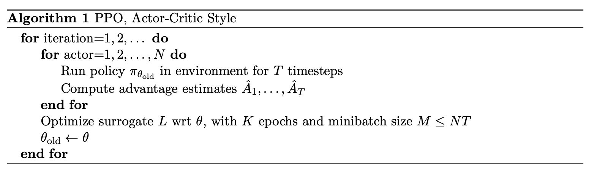
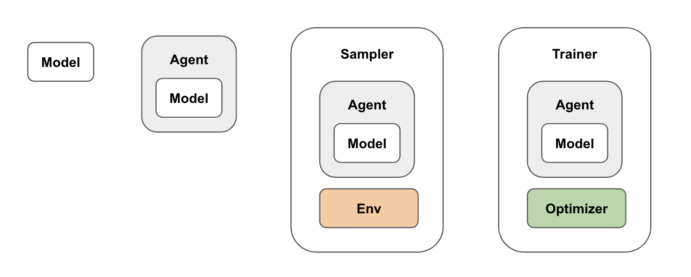
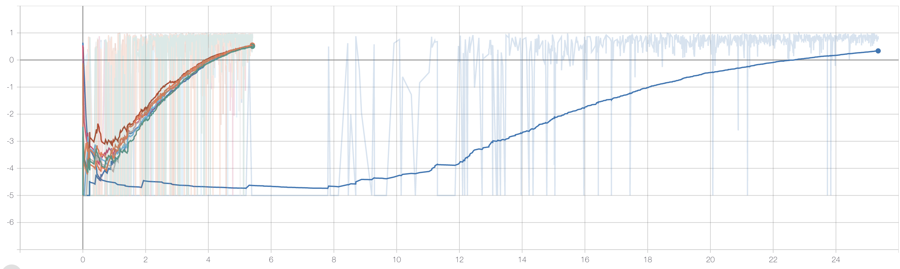

分布式 PPO 的实现
引言
大家好，我是 MakinaRocks 的 Kim Jemin。
在强化学习中，漫长的训练时间往往成为项目的瓶颈。因此，在实际项目中，缩短训练时间是非常重要的一环。本文将介绍如何通过分布式处理来缩短 PPO 的训练时间。
PPO（近端策略优化）
- 近端策略优化（Proximal Policy Optimization，PPO）的表现与当时最先进的方法相当，甚至更好，同时实现和调参都要简单得多。（引自 OpenAI）
- TRPO（Trust Region Policy Optimization，信赖域策略优化）提出了一套理论：在训练过程中不降低策略性能的范围内，尽可能提升策略的性能。
- PPO 可以看作一种使用裁剪目标（Clipped Objective），简化 TRPO 算法复杂计算过程的算法。
- 如果想进一步了解 PPO，请参考以下资料：
- PPO 论文：https://arxiv.org/abs/1707.06347
- TRPO 论文：https://arxiv.org/abs/1502.05477
- OpenAI Spinning Up：https://spinningup.openai.com/en/latest/algorithms/ppo.html
PPO 的训练流程与分布式处理
- PPO 可以采用多种训练方式，但该论文（arXiv:1707.06347）提出了一种收集长度为 T 的固定长度轨迹片段（trajectory segment）进行训练的方法。这里，T 取小于一个回合长度（episode length）的值。
- 轨迹片段由 N 个 Actor（强化学习环境 + 智能体）收集，训练时使用这 N 个 Actor 收集到的轨迹片段。
- 收集到的轨迹共有 NT 个时间步。最终，将这些数据划分为大小为 M 的小批量（mini-batch），训练 K 轮（epoch），其中 M ≤ NT。
- 上述内容可概括如下。（出自 arXiv:1707.06347）

图 1 的中文文字版
算法 1：PPO（Actor-Critic 形式）
- 对每次迭代（iteration = 1, 2, …）：
- 对每个 Actor（actor = 1, 2, …, N）：在环境中运行旧策略 πθ_old 共 T 个时间步，计算优势估计 Â₁, …, ÂT。
- 针对参数 θ 优化代理目标 L；共进行 K 轮训练，小批量大小为 M ≤ NT。
- 更新旧策略参数：θold ← θ。
- 从分布式处理的角度来看，PPO 的训练流程主要可以从两个方面进行考虑。
- 轨迹收集的分布式处理
- 在训练流程中，N 个 Actor 分别收集轨迹片段。如果让各个 Actor 独立运行，同时收集轨迹，那么理论上，轨迹片段的收集过程可以加快 N 倍。
- SGD 的分布式处理
- 如果神经网络模型规模较大，可以通过分布式 SGD 来缩短训练时间。
- 轨迹收集的分布式处理
- 这两种分布式处理方式都值得考虑。不过，一般而言，轨迹收集占据了强化学习总耗时的很大一部分，因此仅将轨迹收集分布式化，就足以显著提高训练速度。
- 本文将重点介绍轨迹收集的分布式处理。
实现分布式 PPO 时的考虑事项
- 实现分布式 PPO 时，主要可以考虑两个组件。
- Learner（学习器）
- 从各个 Actor 收集轨迹，并执行实际的训练。
- 在整个训练流程中担任主控（master）。除了收集轨迹，还负责使 Actor 的模型与 Learner 的模型保持同步。
- Actor（采样执行器）
- 强化学习环境 + 智能体。
- 实际的 PPO 智能体在强化学习环境中运行，生成轨迹。
- 根据 Learner 的请求生成轨迹片段，并由 Learner 更新其模型。
- Learner（学习器）
- 为了按 Learner、Actor 的结构实现系统，需要根据功能对 PPO 算法进行模块化。
- PPO Model：神经网络模型。
- PPO Agent：PPO 强化学习智能体。
- PPO Sampler：轨迹收集。
- PPO Trainer：神经网络训练。

- 接下来，为了实现分布式处理，我们将介绍 Ray 库。
Ray 简介
- Ray 提供了一个库，可以非常方便地实现分布式对象及其之间的数据通信。本文将通过一个简单的 Ray 示例，帮助理解 PPO 的分布式处理。
- 关于 Ray 的更多信息，请参考：
-
示例
import ray ray.init() @ray.remote class Accumulator(object): def __init__(self,n): self.n = n def increment(self,v): self.n += v def read(self): return self.n accumulators = [Accumulator.remote(i) for i in range(4)] [acc.increment.remote(2) for acc in accumulators] futures = [acc.read.remote() for acc in accumulators] print(ray.get(futures)) # [2, 3, 4, 5]- 连接 Ray 集群
-
要使用 Ray 的远程功能，需要连接到 Ray 集群。
ray.init()
-
- 远程类实例（Ray Actor）
-
要在工作节点（worker node）上远程创建类实例，可以使用 @ray.remote 装饰器。
@ray.remote class Accumulator(object): ... -
创建远程类实例和调用远程方法时，在调用处加上 .remote。
acc = Accumulator.remote(3) # 创建远程类实例（Ray Actor） future = acc.increment.remote(2) # 远程方法调用
-
- Future（异步结果引用）
-
远程函数调用会以 Future 的形式返回结果引用。
future = acc.increment.remote(2) -
等待 Future 对应的任务执行完成：
ray.wait(future) -
获取 Future 对应的结果值：
ray.get(future)
-
- 连接 Ray 集群
使用 Ray 实现分布式 PPO：伪代码示例
- 下面用伪代码展示如何使用 Ray 实现分布式 PPO。
-
PPOActor
class PPOActor(object): ... def get_trajectory_segment(self) -> PPOTrajectorySegment: ... def set_model(self,model) ... -
PPOLearner
class PPOLearner(object): ... def train(self,segments: List[PPOTrajectorySegment]): ... def get_model(self): ... -
运行器（runner）
PPOActorRemote = ray.remote(PPOActor) def run(num_of_actors): ray.init() learner = PPOLearner() actors = [] for i in range(num_of_actors): actor = PPOActorRemote() actors.append(actor) model = learner.get_model() futures = [actor.set_model.remote(model) for actor in actors] ray.wait(futures, num_returns=len(actors)) while True: segments_future = [actor.get_trajectory_segment.remote() for actor in actors] ray.wait(segments_future, num_returns=len(actors)) segments = ray.get(segments_future) learner.train(segments) model = learner.get_model() futures = [actor.set_model.remote(model) for actor in actors] ray.wait(futures, num_returns=len(actors))
训练时间比较：8 个 Actor 与单个 Actor
- 横轴：时间。
- 纵轴：每个回合的奖励（episode reward）。

- 这张图比较了使用 8 个 Actor 训练与使用 1 个 Actor 训练的实验结果。
- 图中左侧可以看到分布式 Actor 的曲线，蓝色曲线则对应单个 Actor。
- 可以看到，采用分布式处理后，训练时间明显缩短。
结语
以上介绍了 PPO 的分布式实现。
本文聚焦于分布式处理中的轨迹收集。不过，当模型规模变大时，也需要考虑分布式 SGD。
下次有机会，我们还将介绍模型的分布式训练。